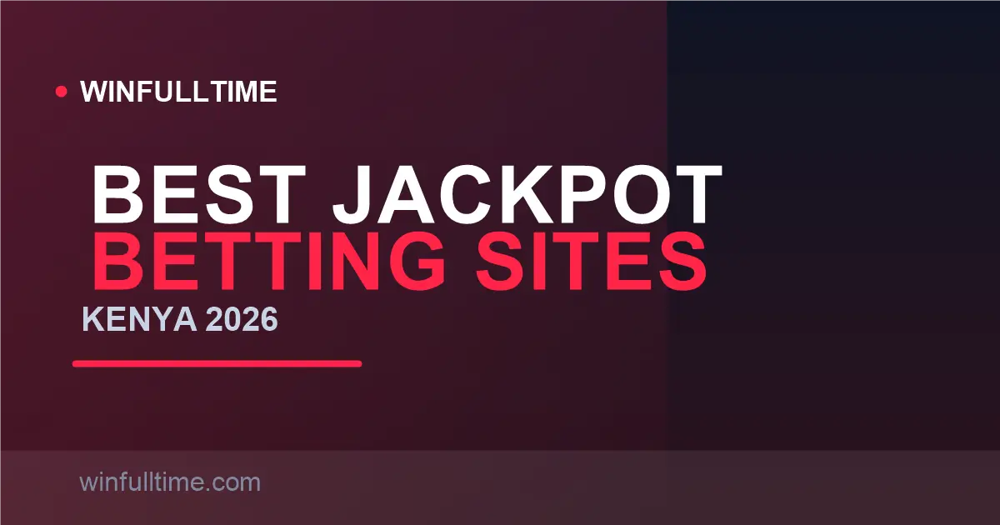

Best Jackpot Betting Sites in Kenya 2026: Grand, Midweek & Daily Pools Ranked

A single KES 99 slip can win more than most Kenyans earn in a decade. Jackpot coupons are the most popular bet in the country, but the right choice depends on pool size, entry cost, draw frequency and how the 5% withdrawal excise hits your prize. These are the sites we rate highest for jackpot betting in 2026.

Kenya Jackpots at a Glance
Kenya runs some of the most generous pool betting in the world. Pool bets work differently from fixed odds: every entry feeds a central prize pool, and the pool is shared among everyone who hits that week's prize tier.
| Jackpot | Operator | Fixtures | Entry | Top Prize | Runs |
|---|---|---|---|---|---|
| Grand Jackpot | Betika | 17 | KES 99 | KES 100M+ (rolls over) | Weekly |
| Midweek Jackpot | Betika | 13–15 | KES 49 | KES 5M–15M+, up to KES 50M on special rounds | Wed–Thu |
| Sababisha | Betika | 7 | KES 20 | KES 100k–500k | Daily |
| Mega Jackpot | SportPesa | 17 | ~KES 99 | KES 200M+ historically | Weekend |
| Jackpot | MozzartBet | 13 | KES 50 | KES 50M+ occasionally | Weekly |
| Pick17 / Pawa6 | betPawa | 17 / 6 | Free | KES 10M+ / pool-based | Weekly |
Figures verified August 2026. Pool sizes roll over weekly and change without notice — always confirm on the operator's jackpot page.
How Jackpot Coupons Actually Work
Every Kenyan jackpot uses the same 1-X-2 format. The operator picks a set of fixtures — 7 on the daily Sababisha, 13 on a midweek coupon, 17 on the big weekend pools — and you predict home win (1), draw (X) or away win (2) for each match. Get them all right and you win the headline prize; land a near-miss and you still collect a tiered cash bonus.
Two things surprised us when we tested these platforms. First, the real difficulty: a random entry on a 17-game coupon has roughly a 1 in 130 million chance player-skill dependent and even strong tipsters hit perfect scores rarely — the realistic value lives in the bonus tiers (12–16 correct). Second, your headline prize is not what you receive: a 5% excise tax is deducted at withdrawal, so plan your entry budget around the post-tax number.
1. Betika Best Jackpot Variety
Betika is the default jackpot home for most Kenyans, and for good reason: it runs three formats at once. The Grand Jackpot is their flagship — 17 fixtures, KES 99 entry, a pool that regularly sits between KES 100 million and KES 400 million because it rolls over whenever nobody nails all 17. The Midweek Jackpot trades scale for reachability (13–15 games at KES 49 with top pools that grow week on week), and the Sababisha gives you a daily 7-game shot at KES 20 with a KES 100k–500k top prize.
The bonus structure is the most forgiving in Kenya. Tiers start at just 12 correct on the Grand, so a decent week almost always produces something back. Entries work through the app, the website, or the old-school SMS route — send GJP to 29090 with your picks. When you win, Betika deducts the 5% withdrawal excise and remits it to the KRA for you, so what lands in M-Pesa is your net prize.
Pros
- Three jackpot formats covering every budget
- Biggest rolling prize pool in Kenya
- Bonuses from just 12 correct picks
- Tax handled automatically at payout
Cons
- Grand's 17 games are brutally hard to perfect
- Bonuses are shared pools — amounts vary weekly
- Double-chance coverage quickly raises the slip cost
Verdict: Best for everyone who wants jackpot variety within one M-Pesa workflow — from a KES 20 daily ticket to the country's biggest weekend pool.
2. SportPesa Kenya's Original Mega Jackpot
SportPesa built the Kenyan jackpot habit. Their Mega Jackpot demands a perfect 17 out of 17 and has paid out tens of millions of shillings per winning entry — historical pools have reached KES 200 million and beyond. The coupon leans heavily on European big-league fixtures, and SportPesa's near-miss bonuses for 13 to 16 correct keep the experience genuinely rewarding on most weekends.
What SportPesa does best is trust and payout reliability. It is a locally licensed operator with quick M-Pesa withdrawals, and the brand has outlived every regulatory scare Kenya's market has thrown at it. The entry is around KES 99 on the standard weekend draw, and M-Pesa or Airtel Money funding is instant.
Pros
- Iconic, high-trust local brand
- Huge historical pool sizes
- Reliable M-Pesa payouts
- Midweek and daily jackpots as well
Cons
- 17 perfect picks is the hardest assignment in pool betting
- Fewer variant formats than Betika
- Bonus tiers split when many entries share a tier
Verdict: The pick if you want a trusted local operator and a shot at genuinely life-changing 17-game pools.
3. MozzartBet Easiest Big Pool to Chase
MozzartBet offers the best balance of odds and effort in the Kenyan jackpot market. Their weekly coupon demands only 13 fixtures at KES 50 — four games fewer than the 17-game giants. That difference is enormous: 3^13 is over a thousand times easier than 3^17, so hitting bonus tiers (10–12 correct) becomes a realistic weekly outcome rather than a lottery ticket.
MozzartBet is BCLB-licensed with a strong local presence, instant M-Pesa deposits and solid withdrawal times. The top prize is smaller than the weekend monsters — the pool occasionally climbs toward KES 50 million on big rounds — but for the sheer probability of actually winning something, this is the smartest entry in the market.
Pros
- Fewer fixtures = far easier to reach bonus tiers
- Cheap KES 50 entry
- Trusted local operator
Cons
- Top pool smaller than Betika or SportPesa
- Fewer virtual/daily jackpot formats
Verdict: Perfect for casual players who want a real chance at a substantial prize without the 17-game lottery odds.
4. 1xBet Jackpot Action Every Day
1xBet runs football TOTO pools on a daily cadence rather than a single weekly draw. The TOTO 15 and related football pools give you jackpot-style betting most days of the week, layered over one of the deepest sportsbooks available in Kenya. You also get 1xBet's enormous market coverage to build your own pools and combos alongside the official jackpots.
Payments are the flexible selling point: instant M-Pesa deposits, Airtel Money, cards and crypto. The trade-off is the interface — it is powerful but cluttered, and the daily TOTO prizes are more modest than the weekend mega-pools. If your jackpot habit needs weekday action, this is the account for it.
Pros
- Jackpot-style betting nearly every day
- Instant M-Pesa and crypto payments
- Enormous market selection alongside pools
Cons
- Daily TOTO prizes smaller than weekend pools
- Cluttered, power-user interface
Verdict: The go-to for daily jackpot habit and bettors who want TOTO pools plus a full sportsbook in one account.
5. betPawa Free-to-Enter Jackpots
betPawa stands alone with genuinely free jackpot entries. Their Pick17 coupon lets you predict 17 matches with no stake at all, and the six-game Pawa6 offers a KES 10 million+ top prize for free entries too. That makes betPawa the only operator where you can practise the full coupon format without risking a shilling.
The downsides are predictable: prize pools are smaller than the big two, and the marketing is aggressive. But as a free-entry addition to a Betika or SportPesa routine, it is hard to beat — you lose nothing and occasionally bank a real win.
Pros
- Free entries with real cash prizes
- Perfect for learning the coupon format
- Low minimum stakes on paid bets
Cons
- Smaller prize pools than the giants
- Heavy promotional pushes
Verdict: Add it as a free roll into your jackpot routine — take every free coupon, keep the paid entries elsewhere.
Jackpot Comparison Table
| Operator | Format | Fixtures | Entry | Top Prize | Near-Miss Tiers |
|---|---|---|---|---|---|
| Betika | Grand / Mid / Daily | 17 / 13–15 / 7 | KES 99 / 49 / 20 | KES 100M+ | From 12 correct |
| SportPesa | Mega | 17 | ~KES 99 | KES 200M+ | 13–16 correct |
| MozzartBet | Jackpot | 13 | KES 50 | KES 50M+ | From 10 correct |
| 1xBet | TOTO pools | 12–15 | From ~KES 50 | Varies daily | Yes |
| betPawa | Pick17 / Pawa6 | 17 / 6 | Free | KES 10M+ | Yes |
Entry prices and pools verified August 2026; always confirm current values on the operator's jackpot page before entering.
Tip: read the 5% exit before you enter
A 5% excise tax applies to withdrawals of betting winnings through mobile money. The operator deducts it and sends the rest to KRA. On a KES 5 million Midweek win, that means KES 4.75 million to M-Pesa — not KES 5 million. Build your entry budget around what you will actually receive.
Jackpot Taxes: What You Actually Receive
Kenya taxes betting at three points, and jackpot players feel two of them. The 20% excise applies to stakes and is built into what you pay per line, not an extra charge you see. The 5% excise on withdrawals is the one that shrinks your winnings — it applies every time you cash out, including jackpot prizes, and licensed operators deduct and remit it for you. Winnings themselves are not hit by a separate income tax for casual players.
The practical rule: whatever the celebratory headline says, mentally take off 5% before planning what the money buys. Operators like Betika handle the deduction automatically, so you never file anything yourself — the prize simply lands in your M-Pesa as the net figure.
Jackpot Strategy Tips for Kenyan Bettors
Tip 1: Play the bonus tiers, not the jackpot
A perfect 17/17 is a lottery at roughly 1 in 130 million for a random slip. The realistic play is the bonus brackets — 12 to 16 correct on the Grand, 10 to 12 on the 13-game coupons. Entries that land there still pay, far more often, and require disciplined fixtures rather than luck.
Tip 2: Bankers plus coverage on two matches
Pick safe home or away bankers for most fixtures, then use double chance on one or two genuinely close games. Coverage raises the slip cost (each covered match doubles it), so cap yourself at two — the 2^n cost formula makes runaway coverage the fastest way to burn your budget.
Tip 3: Run the coupon formats in parallel
Enter the daily Sababisha every day, the midweek at KES 49, and treat the weekend Grand as an occasional lottery ticket rather than a weekly habit. The daily and midweek brackets are where value lives; the Grand is where dreams are bought.
Tip 4: Take every free coupon
betPawa's Pick17 and Pawa6 cost nothing. Claiming free coupons in every sitting costs zero and keeps you sharp — a genuine edge that costs nothing to use.
Frequently Asked Questions
Which betting site has the biggest jackpot in Kenya in 2026?
The SportPesa Mega Jackpot and the Betika Grand Jackpot both run 17-fixture weekend coupons. SportPesa pools have historically reached KES 200 million or more, while the Betika Grand pool regularly sits between KES 100 million and KES 400 million because it rolls over when nobody wins.
What is the cheapest jackpot entry in Kenya?
The Betika Sababisha daily jackpot costs just KES 20 for 7 fixtures, and the Betika Midweek entry is KES 49. betPawa offers genuinely free coupons (Pick17 and Pawa6) alongside its paid games, making them the only no-cost jackpots in the market.
Are jackpot winnings taxed in Kenya?
A 5% excise tax applies on withdrawals when you cash out, and the operator deducts and remits it to the KRA. On a KES 5 million Midweek win you receive KES 4,750,000 to M-Pesa. Stakes carry the built-in 20% excise, but winnings are not separately income-taxed for casual players.
How do jackpot near-miss bonuses work?
If you miss the full 17/17 or 13/13 you can still collect a tiered cash bonus for 12, 13, 14, 15 or 16 correct picks depending on the jackpot. These are pool bets, so the bonus each week depends on the total pool and how many winners share that tier.
Can I play Kenyan jackpots by SMS?
Yes. On Betika, send your prediction string GJP to 29090 for the Grand Jackpot; other operators run SMS surfaces too. The app and website remain the fastest way to enter, review your slip and track results.
Can You Predict This Week's Coupon?
Put your jackpot picks to the test with data-driven predictions and head-to-head analysis built for Kenyan fixtures and big European leagues.
Last updated: 30 August 2026 | By Tochukwu Mesigo |
Build Winning Accumulator Tickets
Generate optimized accumulator combinations from today's data-driven predictions. Set your target odds and get instant ticket suggestions.
Pro Ticket Builder →